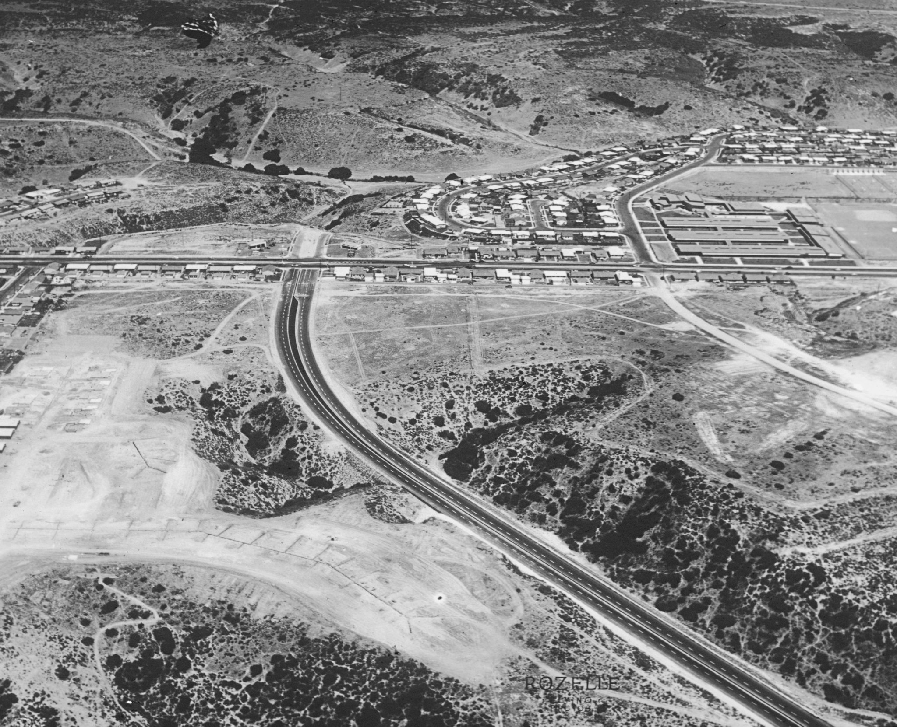

Post-War Boom and the New America
In the summer of 1947, a 28-year-old Navy veteran named Bill Levitt started bulldozing potato fields on Long Island, New York. Within a year, his construction crews were finishing one new house every 16 minutes. By 1951, more than 17,000 nearly identical houses stood where farmland used to be, and 82,000 people had moved in. They called it Levittown. It was not just a housing development; it was a new way of living that millions of Americans wanted desperately — and that not everyone was allowed to have.
The Suburban Boom: Houses, Cars, and the Baby Boom

When World War II ended in 1945, millions of American soldiers came home to a country that felt different. The economy was booming. Factories that had built bombs and tanks were now building refrigerators, cars, and washing machines. Wages were rising. And after years of war, rationing, and separation, Americans wanted one thing more than anything else: a home of their own.
The federal government made that dream easier to reach. The GI Bill, signed in 1944, gave veterans low-interest loans to buy houses and attend college. Banks flooded the market with cheap mortgages. Builders like William Levitt figured out how to mass-produce houses the same way Ford mass-produced cars: standardized designs, pre-cut lumber, specialized work crews that moved from house to house doing the same job over and over. A house that once took months to build could now be completed in days.
The result was suburbanizationThe rapid growth of residential neighborhoods outside of city centers, made possible by cheap housing, cars, and new highways in the postwar period.: millions of Americans leaving cities and moving into brand-new neighborhoods on the outskirts of town. Between 1950 and 1960, the suburban population of the United States nearly doubled. New highways — especially the Interstate Highway System, launched in 1956 — made it possible for workers to drive from a suburb into a city for work and back home in the evening.
All those new families also had children — lots of them. Between 1946 and 1964, American women gave birth to about 76 million babies. This surge in births became known as the baby boomThe dramatic rise in birth rates in the United States from 1946 to 1964, as families reunited after WWII and the postwar economy gave people confidence to have children.. The baby boom transformed everything: schools were overcrowded, toy companies boomed, and the entire consumer economy started designing itself around young families. Those 76 million babies grew up and became the largest generation in American history; today they are retiring and reshaping the economy all over again.
The economy shifted just as dramatically as the landscape. Before the war, most American workers worked in factories, farms, or mines. After the war, more and more people worked in offices, stores, hospitals, and schools. This was the rise of the service economyAn economy where most people work in jobs that provide services — like banking, healthcare, teaching, or retail — rather than making physical goods in factories or farms.. White-collar jobs — meaning office and professional work — became the new path to the middle class. Companies like IBM, General Electric, and a wave of new insurance and finance firms hired hundreds of thousands of workers who wore suits to work, not overalls.
Today, the suburbs built in the 1950s are still the most common form of American neighborhood. The debates those suburbs started — about housing affordability, racial segregation, car dependency, and who deserves access to the American Dream — are still going on in school board meetings, city councils, and courts across the country, including right here in San Diego County.
The Marshall Plan: Rebuilding Europe and Strengthening America

While Americans were buying houses in the suburbs, Europe was still in ruins. World War II had destroyed cities, farms, factories, and entire economies. In 1947, U.S. Secretary of State George Marshall stood up at Harvard University's commencement ceremony and proposed something bold: the United States would spend billions of dollars rebuilding the economies of Western Europe.
The Marshall PlanThe U.S. program from 1948 to 1952 that sent over $13 billion in aid to rebuild Western European economies after World War II, also preventing the spread of communism. sent more than $13 billion — worth roughly $150 billion today — to 16 Western European countries between 1948 and 1952. The money went to rebuild ports, railroads, factories, and farms. By 1952, every country that received Marshall Plan aid had exceeded its prewar levels of economic output.
Marshall's plan was not purely generous; it was strategic. American leaders feared that a poor, unstable Europe would be vulnerable to communist takeover. The Soviet Union had already taken control of Eastern European countries. If France, Italy, or Germany collapsed economically, their citizens might elect communist governments. The Marshall Plan was a way to fight communism not with weapons but with prosperity.
And it came back to the United States in a direct way. Much of the money Europe received was spent on American goods: American wheat, American steel, American farm equipment. The Marshall Plan kept American factories running and American workers employed during the critical transition from wartime to peacetime production. It was foreign aid that doubled as economic stimulus at home.
"Our policy is directed not against any country or doctrine but against hunger, poverty, desperation, and chaos. Its purpose should be the revival of a working economy in the world so as to permit the emergence of political and social conditions in which free institutions can exist."George C. Marshall, Secretary of State, address at Harvard University, June 5, 1947.
Marshall is explaining that the United States is not giving this money to hurt any enemy — it is giving it to prevent the conditions (hunger, chaos, desperation) that allow dangerous political movements to take hold and destroy free societies.
Question 1: According to Marshall, what is the real enemy the United States is trying to fight? List the specific words he uses.
Question 2: The EQ asks who got left out of the new American prosperity. The Marshall Plan focused on rebuilding Europe. What does that suggest about whose recovery the U.S. government prioritized — and who might have been left waiting?
Left Out: Who the Boom Left Behind
The postwar economic boom was real — but it was not available to everyone equally. The same GI Bill that helped white veterans buy homes and go to college was administered in ways that systematically excluded Black veterans. Southern banks refused GI Bill loans to Black applicants. Universities in the South refused to enroll Black veterans under the GI Bill. The new suburbs were legally off-limits to Black families through a practice called redlining: banks drew red lines on maps around Black neighborhoods and refused to offer mortgages there, while also refusing to sell homes in white suburbs to Black buyers.

William Levitt himself was direct about his policy. He refused to sell homes in Levittown to Black families. When challenged, he argued that white buyers would leave if Black families moved in, destroying his investment. The federal government's own lending agencies — the FHA and the VA — encouraged these segregated policies and often required them. The result was that the greatest wealth-building tool in American history: homeownership; was handed to white families and withheld from Black families. The racial wealth gap that exists in the United States today was cemented by these policies.
Mexican American workers, many of them recent immigrants or the children of immigrants, faced their own exclusions. After World War II, millions of Mexican workers were drawn to California and the Southwest by the agricultural industry. The Bracero Program, a government agreement between the United States and Mexico, brought over 4.5 million Mexican workers to American farms between 1942 and 1964. They picked tomatoes, cotton, sugar beets, and grapes under grueling conditions. They lived in labor camps. They were paid less than minimum wage. They had no union protection. Their labor fed American families, but the postwar prosperity those families enjoyed was largely not available to them.

President Truman tried to address some of these inequalities through labor policy. He desegregated the military in 1948 through Executive Order 9981, ending the official segregation that had forced Black soldiers to serve in separate units during WWII. He also backed the Fair Employment Practices Committee, which tried to prevent discrimination in federal hiring. But Truman faced fierce resistance from Southern Democrats in Congress, and most of his civil rights proposals were blocked. The gap between what the boom promised and what it actually delivered to Black Americans, Mexican Americans, and other marginalized groups would eventually fuel one of the most powerful social movements in American history: the Civil Rights Movement of the 1950s and 1960s.
San Diego's Postwar Boom: Clairemont, Segregation, and the Bracero Legacy

San Diego exploded in the postwar years. Navy and defense industry jobs drew hundreds of thousands of new residents. Neighborhoods like Clairemont, Allied Gardens, and Linda Vista were built almost overnight using the same assembly-line construction methods as Levittown — and the same racial restrictions. Deed restrictions and bank redlining kept Black families out of most new San Diego suburbs well into the 1960s.
In the fields of San Diego County and the Imperial Valley, Bracero Program workers harvested the tomatoes, avocados, and flowers that made California agriculture one of the most productive in the world. The labor camps at Miramar and in the Imperial Valley housed thousands of Mexican workers with no rights, no path to citizenship, and no access to the suburban prosperity being built just miles away.
California Rises: The Master Plan and the New Economy

California was at the center of the postwar boom. The state's population grew faster than almost any other in the country, fueled by defense industry jobs, agriculture, and the simple fact that California was warm, affordable, and full of opportunity. Between 1945 and 1960, California's population nearly doubled. The state needed hospitals, roads, water systems — and above all, schools.
In 1960, California made a decision that would shape the state — and eventually the nation — for generations. The legislature passed the California Master PlanA 1960 state law that organized California's public colleges into three systems — UC, CSU, and community colleges — to make higher education affordable and accessible to all California residents. for Higher Education. It organized the state's colleges into three tiers: the University of California (UC) system for research and graduate education; the California State University (CSU) system for professional and undergraduate education; and the community college system, which promised near-free higher education to any California resident who wanted it. The Master Plan was revolutionary: it said that higher education was not a privilege for the wealthy, but a right for every Californian.
The results were staggering. California's UC and CSU campuses became engines of research, innovation, and economic growth. UC Berkeley developed technologies that launched entire industries. The community college system — which today includes over 115 campuses across the state — became the single most powerful tool for economic mobility in California history. A student who could not afford a four-year university could attend a community college for almost nothing and transfer to a UC or CSU to finish a degree.


California's postwar rise also revealed early signs of tension between growth and the environment. The same population boom that filled the suburbs also filled the air with smog. Los Angeles became notorious for its thick, choking haze — caused by car exhaust and factory emissions trapped by the mountains surrounding the Los Angeles basin. In 1947, Los Angeles County created the first air pollution control district in the United States. It was a small step, but it marked the beginning of the American environmental movement that would grow enormously in the following decades.
"The university, the state colleges, and the junior colleges must be considered as essential parts of an integrated system designed to make higher education available to every Californian who can benefit from it and who is willing to work for it. The needs of the people of California must take precedence over the ambitions of any single institution."California Master Plan for Higher Education, Joint Committee on Higher Education, 1960.
The Master Plan is saying that no single university should be allowed to hoard resources or students — the whole system exists to serve all Californians, not to build prestige for itself.
The postwar decisions about housing, education, and who got access to prosperity are still shaping your life right now.
The racial wealth gap, the housing affordability crisis, the fight over community college funding, and the debate about who can afford to live in California — all of it traces back directly to choices made in the late 1940s and 1950s.
- "How Redlining in the 1940s and 1950s Is Still Shaping California's Racial Wealth Gap Today" — Los Angeles Times
- "California's Community College Transfer Promise: A Lifeline or a Broken Ladder?" — CalMatters
- "California Housing Crisis: Who Can Still Afford to Live Here?" — Associated Press

The postwar boom made millions of white families wealthy through homeownership — and used government policy to keep that wealth out of reach for Black and brown families. Is it the government's job to fix that now, decades later? And if so, how?